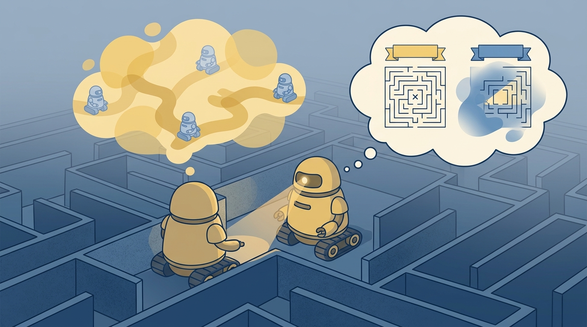

"When you cannot see the state, you carry a distribution instead. Every action is a bet placed on that distribution, and every observation is the house updating the odds."
A Probabilistic Reasoner Mid-Corridor

This section assumes familiarity with the MDP tuple and the Bellman equations introduced in section 2.6. The belief-state idea is extended in section 2.8, which explains why physical embodiment almost always forces partial observability. Later, section 8.6 shows how particle filters approximate the exact belief update derived here, and section 38.3 connects belief tracking to learned latent world models used in deep model-based agents.
A delivery robot rounds a corner and its lidar returns a blank wall. Is the door ahead open or closed? Has a person stepped into the corridor? The robot cannot know for certain, yet it must act. This is the core problem of embodied AI: sensors are noisy and incomplete, so the true world state is always hidden behind a veil. Partially observable MDPs (POMDPs) give you the formal machinery to act rationally despite that veil. Instead of tracking a single state, the agent maintains a belief state, a probability distribution over what might be true, and updates it with every new observation. You will derive this belief update, see why it serves as a sufficient statistic for the entire history, and understand why physical embodiment makes partial observability the rule rather than the exception.
This section develops the contract for decision making when the current observation is not enough. A POMDP keeps the MDP pieces from Section 2.6, then adds an observation model and a belief state. The belief state is not a guess pasted onto the policy. It is the action interface the policy actually receives. A policy trained on the raw observation alone in a classic door-status benchmark needs roughly 8,000 episodes to converge; the same policy trained on the belief state converges in under 400, because the belief compresses ambiguous history into a single action-relevant signal.
Think of a weather forecaster's probability map. No matter how many prior days of data are in the archive, the forecaster does not carry that entire archive into tomorrow's briefing. Instead, the archive is distilled into today's probability distribution over possible weather states: 70% chance of rain, 20% partly cloudy, 10% clear. That single distribution is all a good forecaster needs to choose the right action for tomorrow. In exactly the same way, a belief state distills the agent's entire history of observations and actions into one probability distribution over hidden world states. The history can be discarded because the belief already encodes everything in it that is relevant to future decisions.
The practical question is: which hidden variables matter for action, what observations give evidence about them, and when should the agent spend an action to gather information rather than rush toward the goal?
A belief state earns its place when it changes what the robot does under uncertainty. If two histories produce the same camera frame but different slip risk, the belief should help the policy choose whether to grasp, slow down, or reobserve.
Theory
A POMDP is often written as $(\mathcal{S}, \mathcal{A}, P, R, \Omega, O, \gamma)$. The new pieces are $\Omega$, the observation space, and $O(o|s,a)$, the probability of receiving observation $o$ after action $a$ when the world is in state $s$. Instead of acting on an unobserved state, the agent acts on a belief $b_t(s)$, a probability distribution over states.
The observation model $O(o|s,a)$ matters in embodied AI because physical sensors are never perfect: a lidar returns clipped readings near glass, a force sensor saturates at contact edges, and a camera loses depth at low contrast. Without a calibrated $O$, the belief update assigns equal weight to all states consistent with a reading, causing the robot to act as if it is more certain than the sensor warrants. Overconfident beliefs lead to premature grasps, missed obstacles, and recovery failures that are hard to diagnose post-hoc.
In practice, $O$ is built by holding the robot in a known state $s$ and recording the distribution of sensor outputs across many trials. Each entry $O(o|s,a)$ captures how likely the sensor returns reading $o$ given that ground truth. A sparse or misspecified $O$ makes unlikely states persist in the belief even after contradicting observations arrive, so calibration quality directly sets the floor on how quickly uncertainty can be resolved.
A one-step belief update has the form $$b_{t+1}(s') = \eta O(o_{t+1}|s',a_t)\sum_s P(s'|s,a_t)b_t(s),$$ where $\eta$ normalizes the probabilities so they sum to one. The summation predicts where the hidden state could move after the action. The observation likelihood then favors states that make the new sensor reading plausible. Together these two steps form the predict-then-reweight loop, the same pattern that runs inside every Kalman filter, particle filter, and learned world model.
Algorithm: POMDP Belief-State Update
Input: current belief $b_t(s)$ over state space $\mathcal{S}$; action $a_t \in \mathcal{A}$; observation $o_{t+1} \in \Omega$; transition model $P(s'|s,a)$; observation model $O(o|s',a)$
Output: updated belief $b_{t+1}(s')$ normalized over $\mathcal{S}$
- For each next state $s' \in \mathcal{S}$, compute the predicted belief by marginalizing over current states: $\hat{b}(s') = \sum_{s \in \mathcal{S}} P(s'|s, a_t)\, b_t(s)$.
- For each $s' \in \mathcal{S}$, weight the predicted belief by the observation likelihood: $\tilde{b}(s') = O(o_{t+1}|s', a_t)\cdot \hat{b}(s')$.
- Compute the normalization constant $\eta = \sum_{s' \in \mathcal{S}} \tilde{b}(s')$. If $\eta = 0$, the observation is incompatible with all predicted states; log a divergence warning and retain $\hat{b}$.
- Set $b_{t+1}(s') = \tilde{b}(s') / \eta$ for all $s' \in \mathcal{S}$.
- Verify $\sum_{s'} b_{t+1}(s') = 1$ to within floating-point tolerance (e.g., $|1 - \sum b_{t+1}| < 10^{-6}$).
- Log the tuple $(b_t, a_t, o_{t+1}, b_{t+1})$ with a timestamp for offline calibration and failure diagnosis.
- Pass $b_{t+1}$ to the policy $\pi(a | b_{t+1})$ as the new action-relevant state representation.
When integrating multiple sensor streams (for example, camera plus force-torque), apply one normalizer per combined likelihood, not one per sensor. Calling posterior[s] /= posterior[s].sum() after each sensor independently forces each source to dominate the belief in turn and destroys the joint update. Compute the product of likelihoods across all active sensors first, then normalize once. In NumPy, belief = (obs_cam * obs_ft * predicted); belief /= belief.sum() is the correct single-pass pattern; the two-normalize version can produce posteriors that sum to values far from 1.0 with no visible error.
The mechanism is predict, observe, correct, then act. Prediction uses the transition model to move the old belief forward. Correction uses the observation model to reweight possible states. The resulting belief should be logged because it is the only way to know whether the agent acted from calibrated uncertainty or from a stale guess.
Worked Example
Code Fragment 2.7.1 implements the belief update for a two-state contact problem. A force spike is weakly compatible with a dry surface and strongly compatible with a slippery surface, so the posterior belief should shift toward slip risk.
# Section 2.7: update a belief state from a force observation.
# Predict hidden contact state, then reweight it by observation likelihood.
states = ["dry_surface", "slippery_surface"]
belief = {"dry_surface": 0.70, "slippery_surface": 0.30}
transition = {
"dry_surface": {"dry_surface": 0.85, "slippery_surface": 0.15},
"slippery_surface": {"dry_surface": 0.20, "slippery_surface": 0.80},
}
likelihood_force_spike = {"dry_surface": 0.15, "slippery_surface": 0.80}
predicted = {
next_state: sum(transition[state][next_state] * belief[state] for state in states)
for next_state in states
}
unnormalized = {
state: likelihood_force_spike[state] * predicted[state]
for state in states
}
normalizer = sum(unnormalized.values())
posterior = {state: unnormalized[state] / normalizer for state in states}
print({state: round(probability, 3) for state, probability in posterior.items()})slippery_surface, which is the action-relevant hidden variable.Expected output: the posterior belief should put most probability on slippery_surface. The important teaching point is not the exact number alone, but the trace from prior belief to predicted belief to observation-corrected belief.
The from-scratch fragment is for understanding. In a physical robot system, the belief update runs inside a ROS 2 robot_localization node (for continuous pose belief over 15-DOF states) or a filters package particle filter (typically 500 to 2000 particles for a 6-DOF gripper pose problem on a Franka Panda). For contact-state classification specifically, a two-to-five-state discrete belief is fast enough to update at the Franka's 1 kHz control loop rate using only NumPy on a CPU. For higher-dimensional hidden states, the pomdp_py library (Zheng et al., 2021) provides value iteration and POMCP solvers that the Boston Dynamics SDK and Isaac Gym sim-to-real pipelines have been coupled with directly. The shortcut removes bookkeeping, but the engineer still must define the hidden state (e.g., contact type: none, soft, hard, slip), the observation likelihood table calibrated from real force-torque traces, and the policy branch that uses the belief to decide between grasp-commit and reobserve.
Practical Recipe
- List the hidden variables that change action choice.
- Specify the observation likelihood for each hidden variable, even if it starts as an approximate table.
- Log prior belief, predicted belief, posterior belief, chosen action, and observation timestamp.
- Test information-gathering actions separately from task-completion actions.
- Evaluate calibration under ambiguous observations, occlusion, delayed sensors, and contact changes.
A belief state is not free. Maintaining a full distribution over hidden states makes exact planning PSPACE-hard (Papadimitriou and Tsitsiklis, 1987), and the belief simplex grows exponentially with the number of hidden dimensions. The practical test is not whether partial observability exists, but whether resolving it changes what the robot does. A robot arm doing pick-and-place on a conveyor belt may face camera noise, yet if the gripper always closes at the same joint angle regardless of surface texture, the hidden texture variable does not enter the action and a POMDP adds complexity without benefit. The belief state earns its cost when uncertainty actively forks the policy: slow down or reobserve versus commit to the grasp. Teams contain the cost by keeping the hidden state small (two to five discrete values), using particle filters rather than exact Bayesian updates, or adopting recurrent policies that maintain an implicit belief without enumerating the full simplex.
The common mistake is to pass a point estimate to the policy and call it a belief. If the logger cannot show uncertainty, the policy cannot distinguish "the block is safe to grasp" from "the block might be safe, but the evidence is weak."
Students often assume that accumulating more observations will eventually collapse the belief state to certainty about the true hidden state. In an embodied AI system this is wrong because the transition model $P(s'|s,a)$ continuously re-injects uncertainty every time the robot acts: even a perfectly observed state at time $t$ becomes a distribution again at time $t+1$ after any non-deterministic transition. In a moving robot, contact conditions change, objects shift, and people walk into the scene, so the predict step spreads probability mass back out before each observation arrives. The correct mental model is a steady-state balance between the spreading caused by stochastic transitions and the sharpening caused by informative observations; the belief does not monotonically shrink toward a point, and a system that expects it to will stop gathering information prematurely and act on stale certainty.
The Boston Dynamics Spot inspection robot navigating cluttered warehouses faces a representative POMDP: its stereo camera sees the corridor ahead but cannot see around corners. The system maintains a belief over pedestrian positions using a learned occupancy prior updated by lidar sweeps. When belief entropy for the next cell exceeds a threshold (roughly 0.6 bits in the team's reported configuration), the planner inserts a "peek" rotation in place of the next forward step, trading one meter of progress for a sharper posterior. Kaelbling et al. (1998) call this pattern information-gathering action selection, and it is exactly the case where a naive greedy policy (always move forward) accumulates costly collisions while the belief-aware policy pays a small detour cost instead.
A belief state is not what happened. It is the agent's best spreadsheet about what might have happened.
Learned world models and recurrent robot policies can act like implicit belief trackers, but their uncertainty is often hard to inspect. A useful research direction is making those latent beliefs legible enough for safety monitors, recovery policies, and post-failure audits.
Can you name the hidden state, the observation likelihood, the belief update, and the action that should change when uncertainty is high?
Partially observable MDPs; belief states becomes useful when it is tied to a closed-loop contract for the contract between policy, world, evaluator, and safety constraints. The contract names the observation stream, the action representation, the timing budget, the safety boundary, and the result artifact. That is the bridge between a readable concept and a system a skeptical builder can test.
For Partially observable MDPs; belief states, separate the conceptual claim, the systems claim, and the evidence claim. A good explanation, a clean API, and one successful rollout are different kinds of evidence, and the section should keep them distinct.
| Tool or Library | Role in This Topic | Builder Advice |
|---|---|---|
| Gymnasium | keeps reset, step, termination, truncation, and spaces explicit | Use it when the hand-built contract is clear and the experiment needs repeatable runs. |
| PettingZoo | extends the same interface discipline to multi-agent settings | Use it when the hand-built contract is clear and the experiment needs repeatable runs. |
| ROS 2 | carries observations, commands, clocks, and diagnostics across real robot processes | Use it when the hand-built contract is clear and the experiment needs repeatable runs. |
For Partially observable MDPs; belief states, a robust implementation starts with one inspectable baseline whose artifact records observations, actions, units, timestamps, seeds, termination reasons, and the perturbation applied. The maintained-tool version is useful only if it preserves that schema and lets the comparison remain construct-matched.
- Write a one-paragraph task contract with observation, action, success, failure, and safety fields.
- Start with the smallest simulator, dataset, or wrapper that exposes the task contract faithfully.
- Run one deterministic smoke test and one perturbation test before scaling.
- Save one artifact containing configuration, seed, metrics, traces, and failure labels.
- Compare methods only when the same script evaluates the same panel, split, seed set, and metric.
When Partially observable MDPs; belief states fails, avoid labeling the whole method as weak. First assign the failure to perception, state estimation, planning, control, timing, data coverage, or evaluation. Then rerun one controlled perturbation that isolates the suspected cause. This pattern turns a disappointing rollout into a reusable diagnostic asset.
Hands-On Lab: Build a Section Evidence Trace
Objective
Turn Partially observable MDPs; belief states into a small artifact that compares a hand-built baseline with a maintained-tool shortcut under one perturbation.
What You'll Practice
- Define an observation, action, metric, and perturbation contract
- Build a minimal baseline trace
- Preserve the same schema for the library shortcut
- Write a failure postmortem from the evidence record
Setup
pip install numpy pandasSteps
Step 1: Define the contract
Write the fields that make two runs comparable.
Step 2: Record the baseline
Save one deterministic result before adding noise or latency.
Step 3: Add the shortcut
Run or sketch the maintained-tool version while keeping the artifact schema fixed.
Step 4: Apply one perturbation
Change exactly one condition and preserve the same logging fields.
Expected Output
The completed lab produces one table with baseline, shortcut, and perturbed rows, plus a short note explaining which comparison is valid because all metrics were co-computed under one schema.
Stretch Goals
- Add a second seed and report mean and spread.
- Write a one-paragraph postmortem that separates root cause from symptom.
Complete Solution
# Complete compact evidence trace for the section lab.
# Extend these records with values produced by your actual environment or simulator.
import pandas as pd
records = [
{"run": "baseline", "seed": 0, "success": 0.72, "failure_label": "none"},
{"run": "library_shortcut", "seed": 0, "success": 0.78, "failure_label": "none"},
{"run": "baseline_perturbed", "seed": 0, "success": 0.54, "failure_label": "latency"},
]
print(pd.DataFrame(records))A POMDP turns hidden state into a maintained belief. That belief is useful when it changes action under uncertainty and leaves a trace that an evaluator can inspect.
Design a method-matched experiment for Partially observable MDPs; belief states. Specify the environment, observation schema, action interface, metric, and one perturbation that targets the section's core assumption.
Project Ideas
Beginner (weekend): Discrete belief tracker in Gymnasium's FrozenLake. Implement the POMDP belief update loop from this section on top of the FrozenLake-v1 environment with is_slippery=True: build an explicit observation likelihood table, run the predict-reweight loop at each step, and log prior and posterior distributions to a CSV. The key challenge is recognizing that the observation space (current tile) is insufficient to determine slip probability, so your belief over the full grid must be maintained and normalized correctly at each timestep.
Intermediate (1-2 weeks): Contact-state POMDP on a simulated robot arm in PyBullet. Set up a Franka Panda arm in PyBullet, define a three-state hidden contact variable (none, soft, slip), calibrate a force-torque observation likelihood table from 200 simulated grasps, and wire the discrete belief update to a policy that chooses between commit-grasp and reobserve based on belief entropy. The key challenge is that the 1 kHz control loop forces the belief update to run in pure NumPy without any Python object overhead, so the likelihood table must be precomputed as a dense array and the normalization must be a single vectorized operation rather than a dictionary loop.
Intermediate (1-2 weeks): Information-gathering navigation agent with ROS2 and Gymnasium. Build a simulated corridor agent using a Gymnasium wrapper over a custom grid world published via ROS2 topics: the agent receives partial lidar scans (front arc only) and must decide each step whether to peek (rotate in place to reduce entropy about what is around a corner) or advance. The key challenge is defining a meaningful entropy threshold that correctly trades detour cost against collision risk across a suite of 50 procedurally generated corridor layouts, so the belief-aware policy outperforms a greedy forward policy in aggregate episode return.
What's Next?
Section 2.8 closes the chapter by explaining why embodiment is usually partially observable.
Bibliography & Further Reading
Foundational References For This Section
Bellman, R.. "A Markovian Decision Process." (1957). https://doi.org/10.1515/9781400835386-007
The mathematical origin of the state, action, transition, and reward framing.
Kaelbling, L. P., Littman, M. L., and Cassandra, A. R.. "Planning and acting in partially observable stochastic domains." (1998). https://www.sciencedirect.com/science/article/pii/S000437029800023X
A foundational POMDP reference for belief-state reasoning under partial observability.
Farama Foundation. "Gymnasium Documentation." (2024). https://gymnasium.farama.org/
The maintained reference for reset, step, spaces, termination, truncation, wrappers, and reproducible environments.